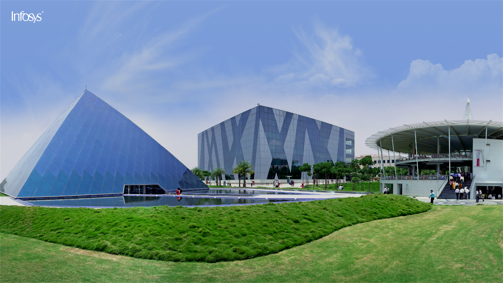

<!--
  ~ Copyright 2021 Infosys Ltd.
  ~ Use of this source code is governed by GNU General Public License version 2
  ~ that can be found in the LICENSE file or at
  ~ https://opensource.org/licenses/GPL-2.0
  -->

<div class="row main-container"
[ngClass]='{"main-container-small-devices": isViewXsOrSm && newsAndAnnouncements.length !== 0, "padLR16": isViewXsOrSm}'>
  <div class="col-12 col-md-6 d-flex align-items-center col-in-main-container" [ngClass]='{"nopadLR": isViewXsOrSm}'>
    <div>
      <div class="text-nowrap logo">
        <span class="DSA_wb_displayText">Infosys | </span>
        <span class="DSA_wb_h1Header">Forums</span>
      </div>
      <br>
      <div [ngSwitch]="isAuthenticated()">
        <div *ngSwitchCase="true">
          <div class="DSA_wb_h1Header" *ngIf="account">Hi {{ account.firstName }}.</div>
          <br>
          <button mat-flat-button class="DSA_wb_primary-btn" [routerLink]='["/all-topics"]'>
            All Topics
            <i class="icon x-24 link-arw-icon iconinline marL8 white"> </i>
          </button>
        </div>
        <div *ngSwitchCase="false">
          <button mat-flat-button class="DSA_wb_primary-btn" (click)="login()">Log In / Register</button>
        </div>
      </div>
    </div>
  </div>
  <div class="col-12 col-md-6 col-in-main-container announcements-and-news-container" (mouseover)="stopSlidingSlides()"
    (mouseout)="startSlidingSlides()" *ngIf='newsAndAnnouncements.length !== 0'>
    <a class="icon x-24 purple previous-icon previous-slide" href="javascript:void(0);" aria-label="Previous"
      (click)='previousSlide()' *ngIf='newsAndAnnouncements.length !== 1 && newsAndAnnouncements.length !== 0'>
    </a>
    <a class="icon x-24 purple next-icon next-slide" href="javascript:void(0);" aria-label="Next" (click)='nextSlide()'
      *ngIf='newsAndAnnouncements.length !== 1 && newsAndAnnouncements.length !== 0'>
    </a>
    <div class="content-div" #overflowDiv [ngClass]='{
        "overflow-y-auto": overflowScrollOnHtmlContent ,
        "overflow-y-hidden": !overflowScrollOnHtmlContent
      }'>
      <h1 class="DSA_wb_h1Header">{{newsAndAnnouncements[newsAndAnnouncementsDisplayIndex]?.title}}</h1>
      <hr>
      <div [innerHtml]='newsAndAnnouncements[newsAndAnnouncementsDisplayIndex]?.raw! | safeHtml'></div>
    </div>
    <div class="button-div">
      <hr>
      <div class="d-flex">
        <div class="d-inline ml-auto">
          <button mat-flat-button class="DSA_wb_text-btn"
            *ngIf="checkOverflow(overflowDiv) && !overflowScrollOnHtmlContent"
            (click)='enableOverflowScrollOnHtmlContent()'>
            See More
            <i class="icon x-16 down-arw-icon iconinline marL8"> </i>
          </button>
          <button mat-flat-button class="DSA_wb_miniSecondary-btn"
            (click)='navigateToAnnouncement()'  *ngIf="!checkOverflow(overflowDiv) || overflowScrollOnHtmlContent">
            View
          </button>
        </div>
      </div>
    </div>
  </div>
</div>



<jhi-loader></jhi-loader>
